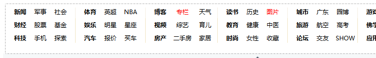
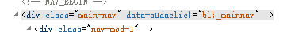
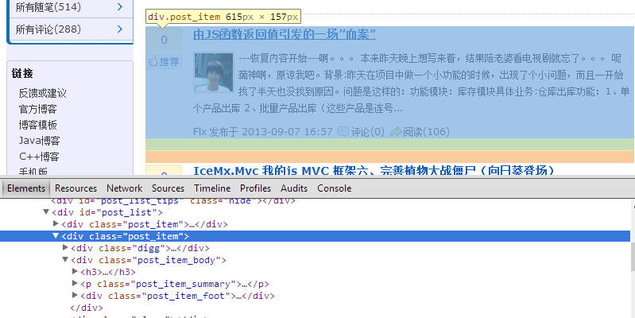

Jumony API 具有完整的 CSS 选择器支持。目前支持的版本是 CSS Selectors Level 3，除了运行时伪类之外的其他选择器基本都完整支持。下面将介绍如何使用选择器来找到自己感兴趣的元素。
我们首先来看一个非常简单的需求，在页面上找出所有的链接。用 CSS 选择器可以很方便的做到这一点。
首先我们还是从互联网下载一个文档来做实验：
var document = new JumonyParser().LoadDocument( "http://www.sina.com.cn/" );
然后利用选择器把所有的链接给取出来，并显示链接总数，因为所有的链接都是<a>元素，所以我们使用选择器"a"，取出所有的<a>元素：
var links = document.Find( "a" ); Console.WriteLine( links.Count() );
运行结果如下：
1504
我们也可以列印出所有的链接元素：
var links = document.Find( "a" ); foreach ( var element in links ) Console.WriteLine( element.OuterHtml() );
运行结果如下（节选）：
... <a target="_blank" href="http://m.sina.com.cn/m/weibo.shtml" suda-uatrack="key= ndex_new_menu&value=sina_apps_list_click">新浪微博</a> <a target="_blank" href="http://m.sina.com.cn/m/sinahome.shtml" suda-uatrack="k y=index_new_menu&value=sina_apps_list_click">新浪新闻</a> <a target="_blank" href="http://m.sina.com.cn/m/sinasports.shtml" suda-uatrack= key=index_new_menu&value=sina_apps_list_click">新浪体育</a> <a target="_blank" href="http://book.sina.com.cn/m/sinabook.shtml" suda-uatrack "key=index_new_menu&value=sina_apps_list_click">新浪阅读</a> <a target="_blank" href="http://m.sina.com.cn/m/weather.shtml" suda-uatrack="ke =index_new_menu&value=sina_apps_list_click">天气通</a> <a href="javascript:;"><i></i>关闭置顶</a> ...
但是，并不是所有的<a>元素都是链接，因为<a>元素也可以用来作为锚点使用。锚点和链接的区别在于，链接必须有href属性，而锚点没有。所以我们改进一下选择器，只选择所有有href属性的<a>元素。我们只需要把代码稍微修改一下：
var links = document.Find( "a[href]" );
[href]是属性选择器，用方括号括住一个名称，表示选择的元素必须具备这个名称的属性。所以"a[href]"就表示我们要选择的元素必须是一个<a>标签，并且这个标签还必须有href这个属性。
不过，即使一个<a>链接具有href属性，但也不一定是一个链接，因为很多链接的href的值其实是"javascript:;"或是"javascript:void(0);"，这些链接只是显示成一个链接的样子，事实上点击的时候并不会跳转或者打开新的网址。而是引发其onclick事件来执行某些操作。
所以，我们再限定一下范围，href属性必须是以http:开头的如何，那么这个选择器可以这样写：
var links = document.Find( "a[href^='http:']" );
^=运算符表示属性值必须以http:开头，那么仍然是刚才那段代码，其运行结果如下（节选）：
... <a target="_blank" href="http://tech.sina.com.cn/z/sinawap/" class="tn-tab" suda -uatrack="key=index_new_menu&value=sina_wap"><i>手机新浪网</i> </a> <a target="_blank" href="http://m.sina.com.cn/m/weibo.shtml" suda-uatrack="key=i ndex_new_menu&value=sina_apps_list_click">新浪微博</a> <a target="_blank" href="http://m.sina.com.cn/m/sinahome.shtml" suda-uatrack="ke y=index_new_menu&value=sina_apps_list_click">新浪新闻</a> <a target="_blank" href="http://m.sina.com.cn/m/sinasports.shtml" suda-uatrack=" key=index_new_menu&value=sina_apps_list_click">新浪体育</a> <a target="_blank" href="http://book.sina.com.cn/m/sinabook.shtml" suda-uatrack= "key=index_new_menu&value=sina_apps_list_click">新浪阅读</a> <a target="_blank" href="http://m.sina.com.cn/m/weather.shtml" suda-uatrack="key =index_new_menu&value=sina_apps_list_click">天气通</a> ...
可以发现那些href="javascript:;"的链接已经不见了。
除了^=之外，属性选择器还支持$=、*=以及~=各种方式进行模糊匹配。当然，也支持=运算符进行精确匹配。
组合子用于将两个简单选择器连接在一起，最常见的组合子是空白字符，在两个选择器中插入空白字符，表示在满足前面的选择器中的子代元素中查找满足后面的选择器的元素。比如说，我们要选择所有在<div>元素里面的链接，可以这样写：
var elements = document.Find( "div a" );
CSS3选择器支持的组合子一共四个：分别是子代、子级、后继、兄弟，即空白、大于号（>）、加号（+）和波浪号（~）。灵活运用将发挥非常大的威力，譬如说我要查找新浪首页中，头部导航中的所有链接就可以用子代组合子来组合我的选择器。新浪首页的头部导航如下：

注：因为新浪页面太大，我只截取了头部导航的一部分。
通过分析HTML可以轻易发现，整个头部导航都是包含在这样一个元素里面的：

所以选择所有头部导航的元素的选择器就可以这样写：
var elements = document.Find( ".main-nav a" );
运行结果如下（节选）：
<a href="http://news.sina.com.cn/"><b>新闻</b></a> <a href="http://mil.news.sina.com.cn">军事</a> <a href="http://news.sina.com.cn/society/">社会</a> <a href="http://finance.sina.com.cn/"><b>财经</b></a> <a href="http://finance.sina.com.cn/stock/">股票</a> <a href="http://finance.sina.com.cn/fund/">基金</a> <a href="http://tech.sina.com.cn/"><b>科技</b></a> <a href="http://mobile.sina.com.cn/">手机</a> <a href="http://tech.sina.com.cn/discovery/">探索</a> <a href="http://sports.sina.com.cn/"><b>体育</b></a> <a href="http://sports.sina.com.cn/g/premierleague/">英超</a> <a href="http://sports.sina.com.cn/nba/">NBA</a> <a href="http://ent.sina.com.cn/"><b>娱乐</b></a> <a href="http://ent.sina.com.cn/star/">明星</a> <a href="http://astro.sina.com.cn/">星座</a> <a href="http://auto.sina.com.cn/"><b>汽车</b></a> <a href="http://dealer.auto.sina.com.cn/price/">报价</a> <a href="http://data.auto.sina.com.cn/">买车</a> <a href="http://blog.sina.com.cn/"><b>博客</b></a> <a href="http://zhuanlan.sina.com.cn/" style="color:red">专栏</a> <a href="http://weather.news.sina.com.cn/">天气</a>
这样，我们就大体上抓取了新浪所有的主栏目。
有很多人在群里问我，CSS选择器要选择第n列的单元格怎么办？要选择第n个子元素怎么办？这些与位置信息有关的选择逻辑，都可以使用CSS3 结构伪类（structural pseudo-class）来解决。
这一次我们用博客园的首页来看一下如何使用结构性伪类，这一次我们要尝试获取下图所示的博客园首页的第二条博文。
经过分析DOM，我们可以发现博客园首页的一个个小豆腐块都是并列的一个个div元素：

若要取出所有的豆腐块，我们可以很简单的使用 "#post_list > .post_item" 来选择。但如果要选出特定第2个豆腐块，就需要使用结构性伪类了。当然，获取所有的豆腐块后，利用 LINQ 的 ElementAt 扩展方法也可以达到同样的效果。不过这里我们演示一下如何用结构性伪类来获取：
最简单形式的nth-child结构性伪类可以获取特定位置的元素，像这样：#post_list > .post_item:nth-child(2)，完整的代码如下：
var parser = new JumonyParser(); var document = parser.LoadDocument( "http://www.cnblogs.com/" ); var elements = document.Find( "#post_list > .post_item:nth-child(2)" ); foreach ( var e in elements ) Console.WriteLine( e );
运行结果：
<div class="post_item"> <div class="digg"> <div class="diggit" onclick="DiggIt(3307560,140987,1)"> <span class="diggnum" id="digg_count_3307560">0</span> </div> <div class="clear"></div> <div id="digg_tip_3307560" class="digg_tip"></div> </div> <div class="post_item_body"> <h3><a class="titlelnk" href="http://www.cnblogs.com/feng-c-x/p/3307560. html" target="_blank">由JS函数返回值引发的一场”血案"</a></h3> <p class="post_item_summary"> <a href="http://www.cnblogs.com/feng-c-x/" target="_blank"><img width="48" heigh t="48" class="pfs" src="http://pic.cnitblog.com/face/437405/20130904201428.png" alt="" /></a> ---恢复内容开始---啊。。。 本来昨天晚上想写来着，结果陪老婆看电 视剧就忘了。。。 呢滴神啊，原谅我吧。背景:昨天在项目中做一个小功能的时候，出现了 个小问题，而且一开始找了半天也没找到原因。问题是这样的：功能模块：库存模块具体业 务:仓库出库功能：1、单个产品出库 2、批量产品出库（这些产品是连号... </p> <div class="post_item_foot"> <a href="http://www.cnblogs.com/feng-c-x/" class="lightblue">Flx</a> 发布于 2013-09-07 16:57 <span class="article_comment"><a href="http://www.cnblogs.com/feng-c-x/p/330 7560.html#commentform" title="" class="gray"> 评论(0)</a></span><span class="article_view"><a href="http://www.cnblogs .com/feng-c-x/p/3307560.html" class="gray">阅读(132)</a></span></div> </div> <div class="clear"></div> </div>
可以看出来，应用了结构性伪类后，结果集只剩下了一个元素，即博客园首页的第二个豆腐块。
结构性伪类除了可以选择特定位置的元素，还能根据一定规则选择符合条件位置的元素，例如所有偶数位置的，奇数位置的，或是3的倍数的。以nth-child伪类为例，其完整形式为： ":nth-child(an+b)"，例如 ":nth-child(3n)" 可以选择所有3的倍数位置的元素，":nth-child(3n+1)" 则可以选择所有3的倍数加1位置的元素，即4、7、10顺位的。
结构性伪类一共有8个，其中最常用的是nth-child，其他的结构性伪类的详细信息可以到 jQuery 或其他 CSS 选择器相关资料网站查阅。
接下来是实战，选择器在很多情况下可以简化我们抓取或者篡改（绑定）特定数据的工作，接下来我演示如何把博客园首页的博文标题都抓下来：
var parser = new JumonyParser(); var document = parser.LoadDocument( "http://www.cnblogs.com/" ); var elements = document.Find( "#post_list > .post_item h3 > a" ); foreach ( var e in elements ) Console.WriteLine( e.InnerText() );
其实只是上面代码的简单修改了一下，我们再改进一下，把标题、链接、有几个人点赞全部取出来：
var parser = new JumonyParser(); var document = parser.LoadDocument( "http://www.cnblogs.com/" ); var elements = document.Find( "#post_list > .post_item" ); foreach ( var e in elements ) { Console.WriteLine( "title: {0}", e.FindFirst( "h3 > a" ).InnerText() ); Console.WriteLine( "link: {0}", e.FindFirst( "h3 > a" ).Attribute( "href" ).Value() ); Console.WriteLine( "votes: {0}", e.FindFirst( ".diggnum" ).InnerText() ); Console.WriteLine( "author: {0}", e.FindFirst( ".post_item_foot a.lightblue" ).InnerText() ); Console.WriteLine( new string( '-', 30 ) ); }
运行结果如下：
title: [android游戏开发初学]简单的游戏引擎 link: http://www.cnblogs.com/boliu/p/3307624.html votes: 1 author: boliu ------------------------------ title: 由JS函数返回值引发的一场”血案" link: http://www.cnblogs.com/feng-c-x/p/3307560.html votes: 0 author: Flx ------------------------------ title: IceMx.Mvc 我的js MVC 框架六、完善植物大战僵尸（向日葵登场） link: http://www.cnblogs.com/ajimidan/p/3307544.html votes: 1 author: 飞翔吧菜鸟 ------------------------------ title: Redis安装介绍 link: http://www.cnblogs.com/fuhongxue2011/p/3307528.html votes: 0 author: 傅红雪2011 ------------------------------ title: 小学徒博客索引 link: http://www.cnblogs.com/xiaoxuetu/p/3297555.html votes: 0 author: 小学徒V ------------------------------ title: JVM源码---教你傻瓜式编译openjdk7（JAVA虚拟机爱好者必看） link: http://www.cnblogs.com/zuoxiaolong/p/jvm10.html votes: 0 author: 左潇龙 ------------------------------ title: Moon.Orm 5.0及之前版本的开源计划 link: http://www.cnblogs.com/humble/p/3307388.html votes: 1 author: [秦时明月] ------------------------------ title: touch事件分发 link: http://www.cnblogs.com/ctaodream/p/3307386.html votes: 0 author: ctaodream ------------------------------ title: Ubuntu下安装qq方法及疑难问题解决 link: http://www.cnblogs.com/lanxuezaipiao/p/3307381.html votes: 0 author: Alexia(minmin) ------------------------------ title: 讲讲Linq to SQL映射（基础篇） link: http://www.cnblogs.com/flowwind/p/3307373.html votes: 1 author: flowbywind ------------------------------ title: 关于android内存泄漏的研究 link: http://www.cnblogs.com/huyong123/p/3307372.html votes: 0 author: 一只奋斗的猿 ------------------------------ title: 云计算之路-试用Azure：如何建立虚拟机之间的内网连接 link: http://www.cnblogs.com/cmt/p/3305983.html votes: 4 author: 博客园团队 ------------------------------ title: 初试weka数据挖掘 link: http://www.cnblogs.com/hxsyl/p/3307343.html votes: 4 author: DM张朋飞 ------------------------------ title: 十三种基于直方图的图像全局二值化算法原理、实现、代码及效果。 link: http://www.cnblogs.com/Imageshop/p/3307308.html votes: 3 author: Imageshop ------------------------------ title: 算法：字符串消除问题的数学证明 link: http://www.cnblogs.com/grenet/p/3300591.html votes: 0 author: 万仓一黍 ------------------------------ title: 【吐槽】VS2012的安装项目只能用InstallShield Limited Edition[附资源下载] link: http://www.cnblogs.com/asxinyu/p/3306992.html votes: 2 author: asxinyu ------------------------------ title: JS面向对象思想（OOP） link: http://www.cnblogs.com/BABLOVE/p/3307038.html votes: 0 author: 如梦不是梦 ------------------------------ title: 使用avalon 实现一个序列号功能 link: http://www.cnblogs.com/rubylouvre/p/3306344.html votes: 2 author: 司徒正美 ------------------------------ title: 后缀数组 link: http://www.cnblogs.com/chengxuyuancc/p/3306963.html votes: 0 author: 在于思考 ------------------------------ title: Web API 强势入门指南 link: http://www.cnblogs.com/developersupport/p/aspnet-webapi.html votes: 35 author: 微软互联网开发支持 ------------------------------